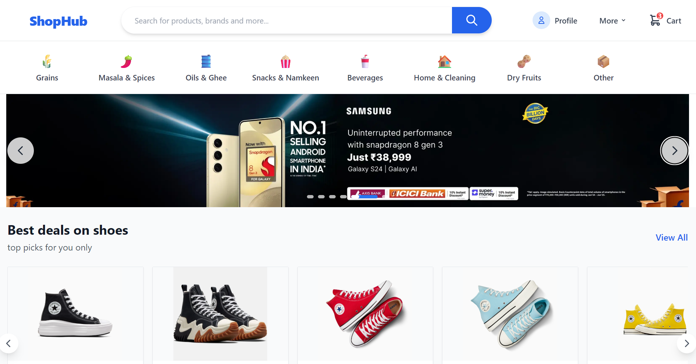
E-commerce
ShopHub
A shopping storefront with product categories, search, promotional banners, and product collections.
View project preview ↗View live project ↗Full Stack Developer
& Product Manager
From the first idea to the final interaction.
I work where thoughtful products meet code.
I’m Smit, a Full Stack Developer and Product Manager studying Computer Engineering. I enjoy connecting the technical details of a product with the bigger picture of what it should do for people.
This is a collection of the things I’m working on, the code behind them, and the experience I’m gathering along the way.

A shopping storefront with product categories, search, promotional banners, and product collections.
View project preview ↗View live project ↗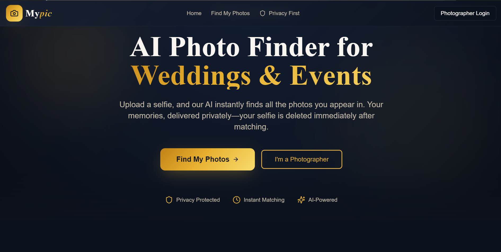
A photo discovery experience for weddings and events, built around selfie-based matching.
View project preview ↗View live project ↗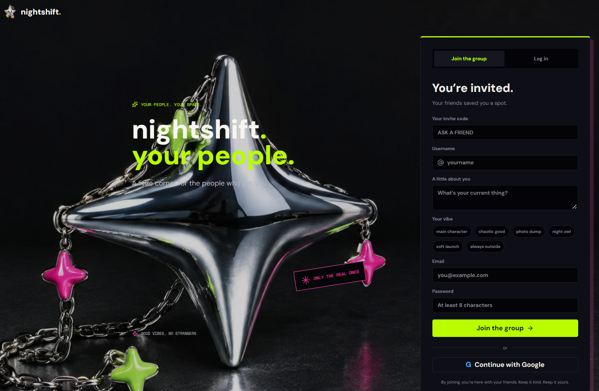
An invite-based community experience with personal profiles and a bold visual identity.
View project preview ↗View live project ↗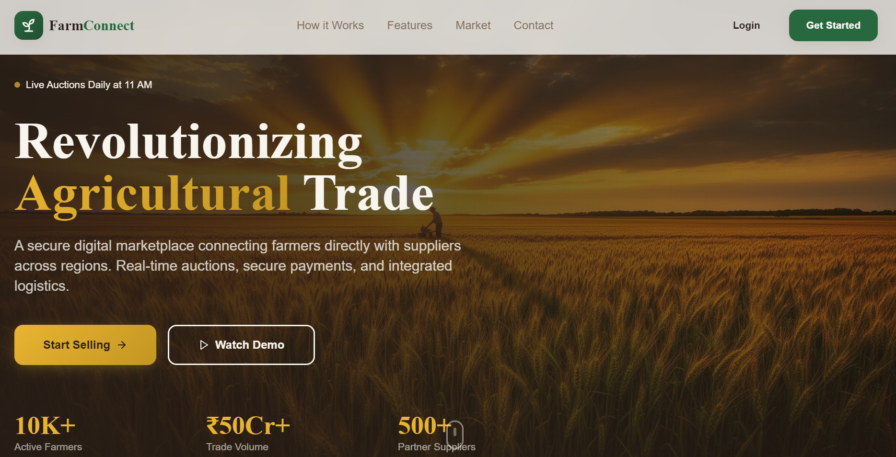
A digital marketplace concept connecting farmers and suppliers through agricultural trade.
View project preview ↗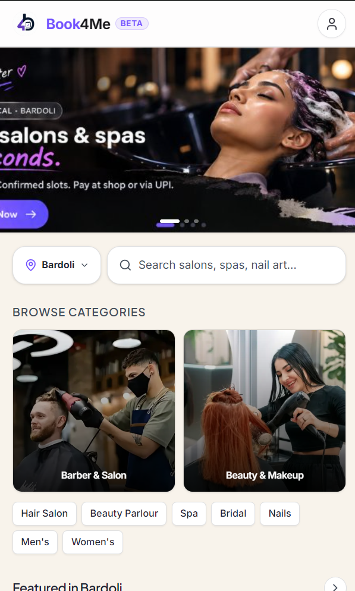
A salon and spa discovery experience with local search, categories, and appointment booking.
View project preview ↗View live project ↗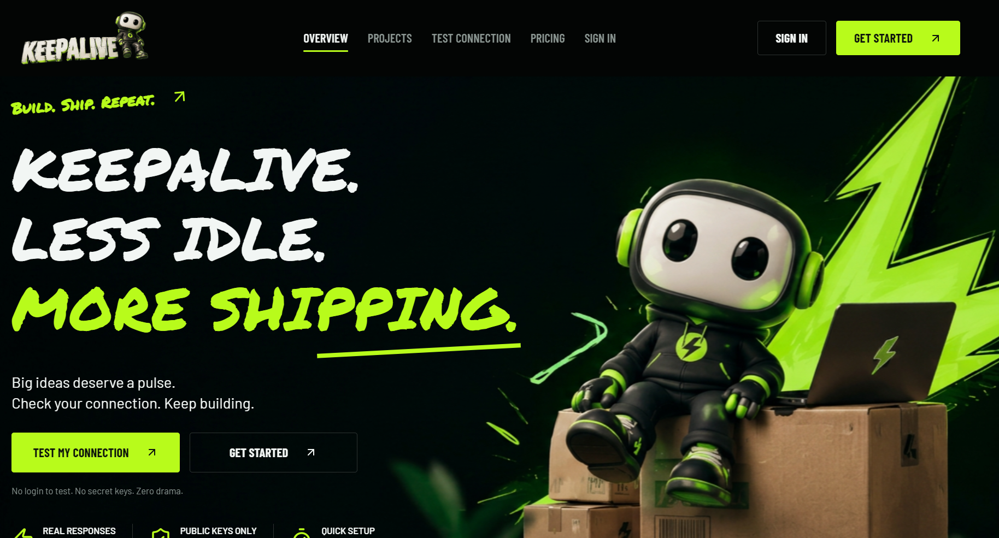
A developer-focused workspace for testing connections and keeping projects moving.
View project preview ↗View live project ↗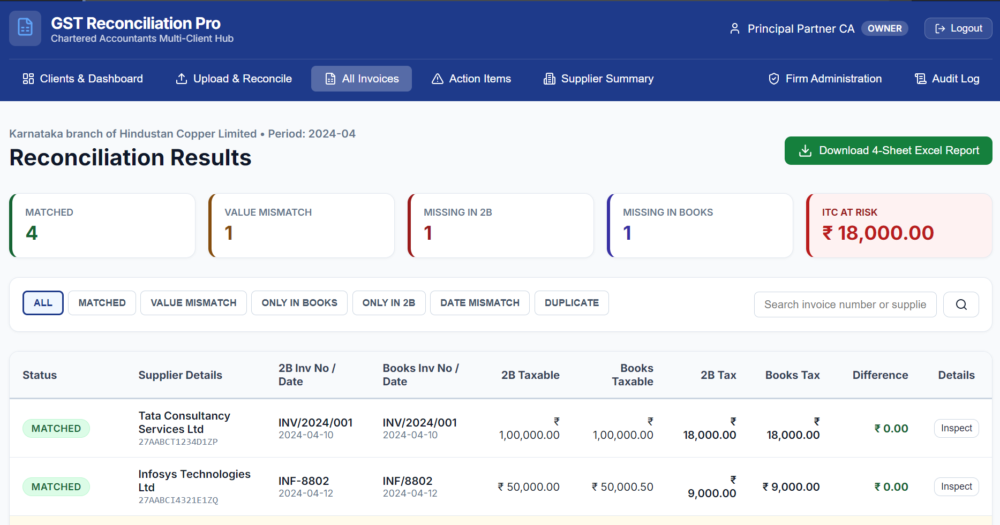
A multi-client reconciliation dashboard with invoice matching, action items, and report exports.
View project preview ↗View live project ↗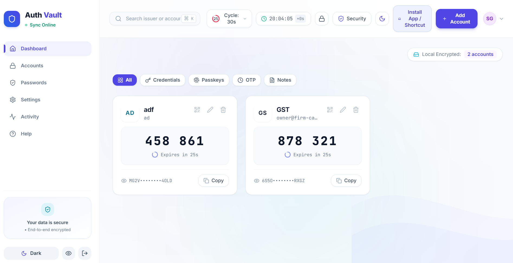
An account dashboard bringing credentials, passkeys, one-time passwords, and notes together.
View project preview ↗View live project ↗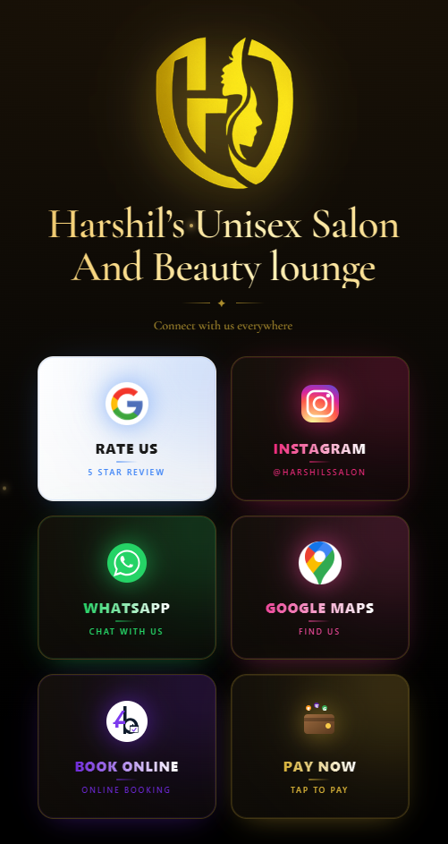
A branded salon page bringing reviews, social channels, directions, booking, and payments together.
View project preview ↗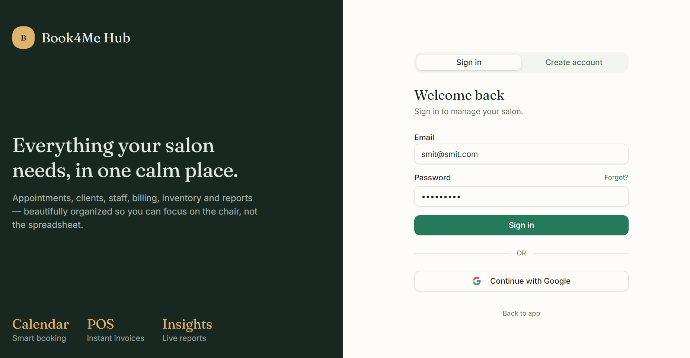
A salon management experience for appointments, clients, staff, billing, inventory, and reports.
View project preview ↗View live project ↗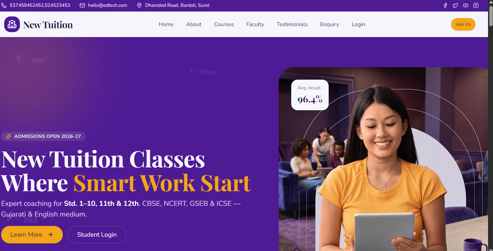
A tuition class website showcasing courses, faculty, admissions, and a student login.
View project preview ↗View live project ↗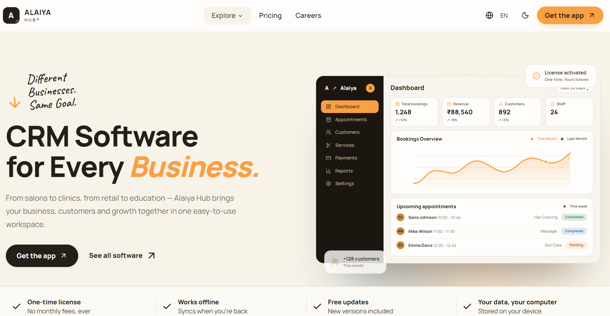
A business workspace concept for customers, appointments, payments, and reporting.
View project preview ↗View live project ↗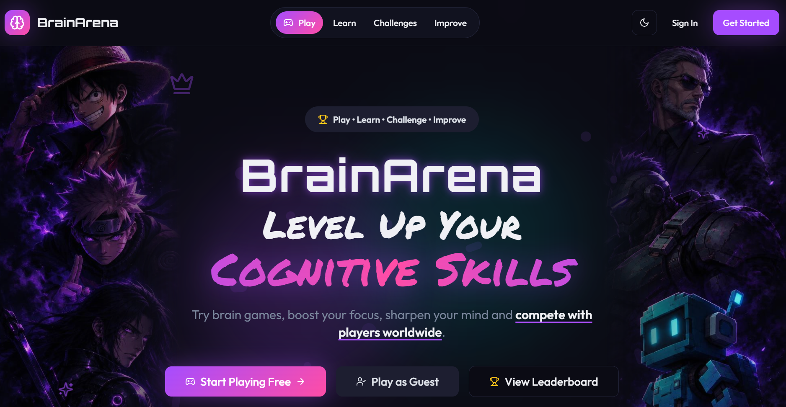
A brain-training experience combining games, learning, challenges, and competitive play.
View project preview ↗Currently studying
Work experience
Contribution calendar provided by ghchart. Explore more contributions on GitHub.